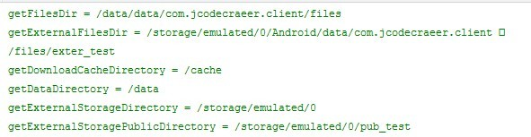
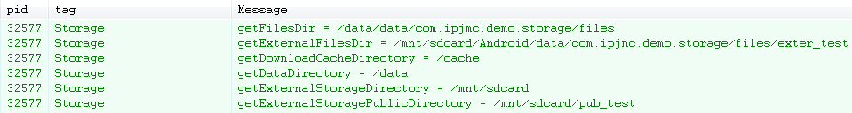

摘要 其实安卓文件的操作和java在pc环境下的操作并无二致，之所以需要单独讲解是因为安卓系统提供了不同于pc的访问文件系统根路径的api，同时对一个应用的私有文件做了统一的管理。根据我的经验，初学者在这部分感到很容易混淆内部存储和外部存储两个概念。 相对
其实安卓文件的操作和java在pc环境下的操作并无二致，之所以需要单独讲解是因为安卓系统提供了不同于pc的访问文件系统根路径的api，同时对一个应用的私有文件做了统一的管理。根据我的经验，初学者在这部分感到很容易混淆内部存储和外部存储两个概念。
相对路径和绝对路径
在java中，关于相对路径和绝对路径是这样解释的，如果你很熟悉这部分以下灰色文字可以跳过：
绝对路径是指书写文件的完整路径，例如d:\java \Hello.java，该路径中包含文件的完整路径d:\java以及文件的全名Hello.java。使用该路径可以唯一的找到一个文件，不会产生歧 义。但是使用绝对路径在表示文件时，受到的限制很大，且不能在不同的操作系统下运行，因为不同操作系统下绝对路径的表达形式存在不同。
相对路径是指书写文件的部分路径，例如\test \Hello.java，该路径中只包含文件的部分路径\test和文件的全名Hello.java，部分路径是指当前路径下的子路径，例如当前程序在 d:\abc下运行，则该文件的完整路径就是d:\abc\test。使用这种形式，可以更加通用的代表文件的位置，使得文件路径产生一定的灵活性。
在Eclipse项目中运行程序时，当前路径是项目的 根目录，例如工作空间存储在d:\javaproject，当前项目名称是Test，则当前路径是：d:\javaproject\Test。在控制台下 面运行程序时，当前路径是class文件所在的目录，如果class文件包含包名，则以该class文件最顶层的包名作为当前路径。
这是java在多数操作系统中这样操作，很显然是要我们尽可能的使用相对路径，但是在安卓中，其实多数情况下我们都是使用的绝对路径。为什么呢？注 意上面说到相对路径是以当前项目所在路径为当前路径，但在安卓中我们是不可能在项目所在路径目录下做任何操作的，因为普通java中我们的项目创建于服务 器（pc也算是服务器），运行于服务器，我们当然能在服务器操作自己的文件目录。但是安卓开发中，我们的项目一般是创建于自己工作的电脑，而运行于手机， 既然apk已经运行于手机了，那项目就已经部署到手机上了，应该以apk在手机上的位置来确定相对路径，但我们好像们没有办法操作这个路径的，因为apk 是在system目录下，就算可以操作，在这个目录下存取文件也是没有意义的，比如我写一个相册程序，图片肯定是放在外部存储中，而如果我要保存一个应用 的一些设置数据，我是放在内部存储的data目录下，因此其实在安卓文件管理中，我们都是在操作绝对路径。
File类
操作一个文件（读写，创建文件或者目录）是通过File类来完成的，这个操作和java中完全一致。
外部存储external storage和内部存储internal storage
1.内部存储：
注意内部存储不是内存。内部存储位于系统中很特殊的一个位置，如果你想将文件存储于内部存储中，那么文件默认只能被你的应用访问到，且一个应用所创 建的所有文件都在和应用包名相同的目录下。也就是说应用创建于内部存储的文件，与这个应用是关联起来的。当一个应用卸载之后，内部存储中的这些文件也被删 除。从技术上来讲如果你在创建内部存储文件的时候将文件属性设置成可读，其他app能够访问自己应用的数据，前提是他知道你这个应用的包名，如果一个文件 的属性是私有（private），那么即使知道包名其他应用也无法访问。 内部存储空间十分有限，因而显得可贵，另外，它也是系统本身和系统应用程序主要的数据存储所在地，一旦内部存储空间耗尽，手机也就无法使用了。所以对于内部存储空间，我们要尽量避免使用。Shared Preferences和SQLite数据库都是存储在内部存储空间上的。内部存储一般用Context来获取和操作。
getFilesDir()获取你app的内部存储空间，相当于你的应用在内部存储上的根目录。
如果是要创建一个文件，如下
1 | File file = newFile(context.getFilesDir(), filename); |
安卓还为我们提供了一个简便方法 openFileOutput()来读写应用在内部存储空间上的文件，下面是一个向文件中写入文本的例子：
1 2 3 4 5 6 7 8 9 10 | String filename = "myfile";String string = "Hello world!";FileOutputStream outputStream;try{outputStream = openFileOutput(filename, Context.MODE_PRIVATE);outputStream.write(string.getBytes());outputStream.close();} catch(Exception e) {e.printStackTrace();} |
内部存储的其他一些操作：
A.列出所有的已创建的文件,这个可能不容易想到，Context居然有这样的方法。
1 2 3 4 | String[] files = Context.fileList();for(String file : files) ｛Log.e(TAG, "file is "+ file);} |
B.删除文件，能创建就要能够删除，当然也会提供了删除文件的接口，它也非常简单，只需要提供文件名
1 2 3 4 5 | if(Context.deleteFile(filename)) {Log.e(TAG, "delete file "+ filename + " sucessfully“);} else {Log.e(TAG, "failed to deletefile " + filename);} |
C.创建一个目录，需要传入目录名称，它返回 一个文件对象用到操作路径
1 2 | File workDir = Context.getDir(dirName, Context.MODE_PRIVATE);Log.e(TAG, "workdir "+ workDir.getAbsolutePath(); |
总结一下文件相关操作，可以得出以下三个特点：
1. 文件操作只需要向函数提供文件名，所以程序自己只需要维护文件名即可；
2. 不用自己去创建文件对象和输入、输出流，提供文件名就可以返回File对象或输入输出流
3. 对于路径操作返回的都是文件对象。
2.外部存储：
最容易混淆的是外部存储，如果说pc上也要区分出外部存储和内部存储的话，那么自带的硬盘算是内部存储，U盘或者移动硬盘算是外部存储，因此我们很 容易带着这样的理解去看待安卓手机，认为机身固有存储是内部存储，而扩展的T卡是外部存储。比如我们任务16GB版本的Nexus 4有16G的内部存储，普通消费者可以这样理解，但是安卓的编程中不能，这16GB仍然是外部存储。
所有的安卓设备都有外部存储和内部存储，这两个名称来源于安卓的早期设备，那个时候的设备内部存储确实是固定的，而外部存储确实是可以像U盘一样移 动的。但是在后来的设备中，很多中高端机器都将自己的机身存储扩展到了8G以上，他们将存储在概念上分成了"内部internal" 和"外部external" 两部分，但其实都在手机内部。所以不管安卓手机是否有可移动的sdcard，他们总是有外部存储和内部存储。最关键的是，我们都是通过相同的api来访问 可移动的sdcard或者手机自带的存储（外部存储）。
外部存储虽然概念上有点复杂，但也很好区分，你把手机连接电脑，能被电脑识别的部分就一定是外部存储。
关于外部存储，我觉得api中在介绍Environment.getExternalStorageDirectory()方法的时候说得很清楚：
don't be confused by the word "external" here. This directory can better be thought as media/shared storage. It is a filesystem that can hold a relatively large amount of data and that is shared across all applications (does not enforce permissions). Traditionally this is an SD card, but it may also be implemented as built-in storage in a device that is distinct from the protected internal storage and can be mounted as a filesystem on a computer.
看不懂没关系，其实跟我说的意思差不多，只是觉得说得比较形象，不知道是我的表述问题，还是英文在逻辑解释方面比汉语强，因为白话文其实是被阉割的汉语。
外部存储中的文件是可以被用户或者其他应用程序修改的，有两种类型的文件（或者目录）：
1.公共文件Public files：文件是可以被自由访问，且文件的数据对其他应用或者用户来说都是由意义的，当应用被卸载之后，其卸载前创建的文件仍然保留。比如camera应用，生成的照片大家都能访问，而且camera不在了，照片仍然在。
如果你想在外存储上放公共文件你可以使用getExternalStoragePublicDirectory()
1 2 3 4 5 6 7 8 9 | public File getAlbumStorageDir(String albumName) {// Get the directory for the user's public pictures directory.File file = newFile(Environment.getExternalStoragePublicDirectory(Environment.DIRECTORY_PICTURES), albumName);if(!file.mkdirs()) {Log.e(LOG_TAG, "Directory not created");}returnfile;} |
在上面的代码中我们创建获得了存放picture的目录，并且新创建一个albumName文件。
如果你的api 版本低于8，那么不能使用getExternalStoragePublicDirectory()，而是使用Environment.getExternalStorageDirectory(),他不带参数，也就不能自己创建一个目录，只是返回外部存储的根路径。
2.私有文件Private files：其实由于是外部存储的原因即是是这种类型的文件也能被其他程序访问，只不过一个应用私有的文件对其他应用其实是没有访问价值的（恶意程序除外）。外部存储上，应用私有文件的价值在于卸载之后，这些文件也会被删除。类似于内部存储。
创建应用私有文件的方法是Context.getExternalFilesDir()，如下：
1 2 3 4 5 6 7 8 9 | public File getAlbumStorageDir(Context context, String albumName) {// Get the directory for the app's private pictures directory.File file = newFile(context.getExternalFilesDir(Environment.DIRECTORY_PICTURES), albumName);if(!file.mkdirs()) {Log.e(LOG_TAG, "Directory not created");}returnfile;} |
上面的代码创建了一个picture目录，并在这个目录下创建了一个名为albumName的文件，Environment.DIRECTORY_PICTURES其实就是字符串picture。
所有应用程序的外部存储的私有文件都放在根目录的Android/data/下，目录形式为/Android/data/<package_name>/
如果你的api 版本低于8，那么不能使用getExternalFilesDir()Environment.getExternalStorageDirectory()获得根路径之后，自己再想办法操作/Android/data/<package_name>/下的文件。
也就是说api 8以下的版本在操作文件的时候没有专门为私有文件和公共文件的操作提供api支持。你只能先获取根目录，然后自行想办法。
在使用外部存储之前，你必须要先检查外部存储的当前状态，以判断是否可用。
1 2 3 4 5 6 7 8 9 10 11 12 13 14 15 | boolean mExternalStorageAvailable = false;boolean mExternalStorageWriteable = false;String state = Environment.getExternalStorageState();if(Environment.MEDIA_MOUNTED.equals(state)) {// We can read and write the mediamExternalStorageAvailable = mExternalStorageWriteable = true;} elseif(Environment.MEDIA_MOUNTED_READ_ONLY.equals(state)) {// We can only read the mediamExternalStorageAvailable = true;mExternalStorageWriteable = false;} else{// Something else is wrong. It may be one of many other states, but all we need// to know is we can neither read nor writemExternalStorageAvailable = mExternalStorageWriteable = false;} |
最后为了弄清楚 getFilesDir，getExternalFilesDir，getExternalStorageDirectory，getExternalStoragePublicDirectory 等android文件操作方法，我将这些方法的执行结果打印出来，看看到底路径是啥样，在activity中执行以下代码：
1 2 3 4 5 6 | Log.i("codecraeer", "getFilesDir = " + getFilesDir());Log.i("codecraeer", "getExternalFilesDir = " + getExternalFilesDir("exter_test").getAbsolutePath());Log.i("codecraeer", "getDownloadCacheDirectory = " + Environment.getDownloadCacheDirectory().getAbsolutePath());Log.i("codecraeer", "getDataDirectory = " + Environment.getDataDirectory().getAbsolutePath());Log.i("codecraeer", "getExternalStorageDirectory = " + Environment.getExternalStorageDirectory().getAbsolutePath());Log.i("codecraeer", "getExternalStoragePublicDirectory = " + Environment.getExternalStoragePublicDirectory("pub_test")); |
在log中看到如下结果：

从log中我们可以看到外部存储根目录在我手机（nexus 3）上是/storage/emulated/0,奇怪的是在有些手机上同样的代码却是下面的情况：

部存储根目录为/mnt/sdcard.
RandomAccessFile提供对文件的读写功能，与普通的输入输出流不一样的是RamdomAccessFile可以任意的访问文件的任何地方。这就是“Random”的意义所在。
RandomAccessFile的对象包含一个记录指针，用于标识当前流的读写位置，这个位置可以向前移动，也可以向后移动。RandomAccessFile包含两个方法来操作文件记录指针。
long getFilePoint():记录文件指针的当前位置。
void seek(long pos):将文件记录指针定位到pos位置。
RandomAccessFile包含InputStream的三个read方法，也包含OutputStream的三个write方法。同时RandomAccessFile还包含一系列的readXxx和writeXxx方法完成输入输出。
RandomAccessFile的构造方法如下
mode的值有四个
"r":以只读文方式打开指定文件。如果你写的话会有IOException。
"rw":以读写方式打开指定文件，不存在就创建新文件。